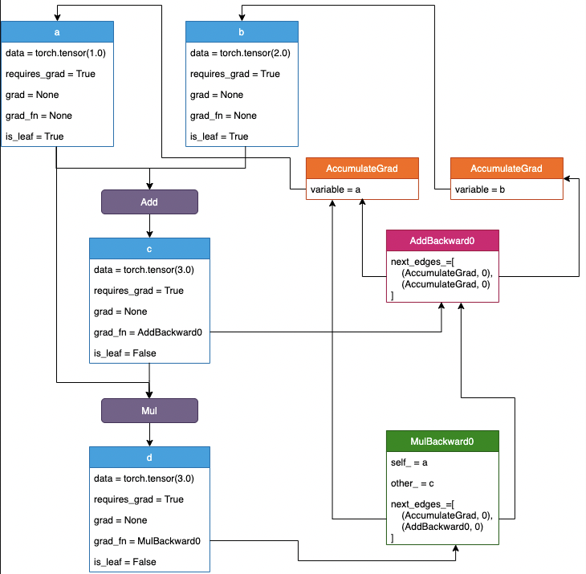
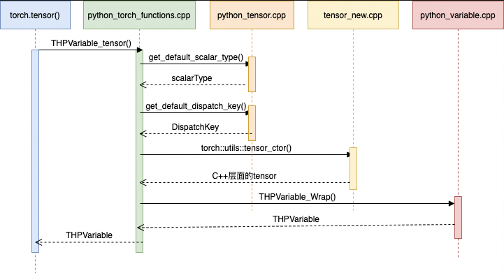
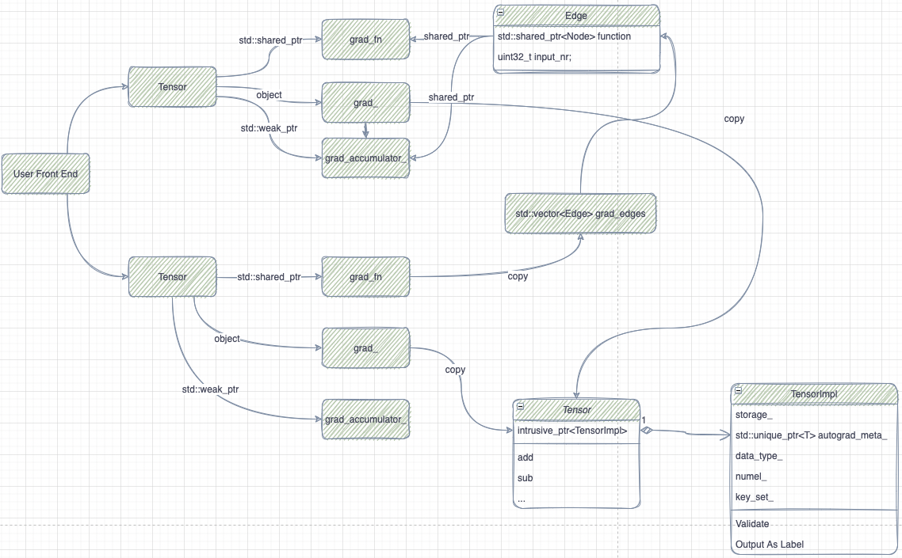

Autograd
// torch/csrc/autograd/variable.h
struct TORCH_API AutogradMeta : public c10::AutogradMetaInterface {
std::string name_;
Variable grad_;
std::shared_ptr<Node> grad_fn_;
std::weak_ptr<Node> grad_accumulator_;
std::shared_ptr<ForwardGrad> fw_grad_;
std::vector<std::shared_ptr<FunctionPreHook>> hooks_;
std::shared_ptr<hooks_list> cpp_hooks_list_;
}
AutogradMeta 中包含 autograd 所需的元素
- grad_: Tensor 对应的 grad
- grad_fn_: 反向 op
- grad_accumulator_: 反向梯度累加器，Node 类型
- cpp_hooks_list_, hooks_: 反向调用时的 hook
Node
Node
- The most important method on
Nodeis the call operator, which takes in a list of variables and produces a list of variables. - The precise size of these lists can be determined with
num_inputs()andnum_outputs(). Nodes are stitched together via theirnext_edgeinterface, which let you manipulate the set of outgoing edges of aNode.- You can add an edge with
add_next_edge(), retrieve an edge withnext_edge(index)and iterate over them via thenext_edges()method.
// torch/csrc/autograd/function.h
using edge_list = std::vector<Edge>;
struct TORCH_API Node : std::enable_shared_from_this<Node> {
public:
explicit Node(
uint64_t sequence_nr,
edge_list&& next_edges = edge_list())
: sequence_nr_(sequence_nr),
next_edges_(std::move(next_edges)) {
for (const Edge& edge: next_edges_) {
update_topological_nr(edge);
}
}
variable_list operator()(variable_list&& inputs) {
...
return apply(std::move(inputs));
}
void update_topological_nr(const Edge& edge) {
Node* node = edge.function.get();
if (node) {
auto topo_nr = node->topological_nr();
if (topological_nr_ <= topo_nr) {
topological_nr_ = topo_nr + 1;
}
}
}
void set_next_edge(size_t index, Edge edge) {
update_topological_nr(edge);
next_edges_[index] = std::move(edge);
}
void add_next_edge(Edge edge) {
update_topological_nr(edge);
next_edges_.push_back(std::move(edge));
}
void set_next_edges(edge_list&& next_edges) {
next_edges_ = std::move(next_edges);
for (const auto& next_edge : next_edges_) {
update_topological_nr(next_edge);
}
}
const Edge& next_edge(size_t index) const noexcept {
return next_edges_[index];
}
const edge_list& next_edges() const noexcept {
return next_edges_;
}
edge_list& next_edges() noexcept {
return next_edges_;
}
protected:
virtual variable_list apply(variable_list&& inputs) = 0;
const uint64_t sequence_nr_;
uint64_t topological_nr_ = 0;
uint64_t thread_id_ = 0;
edge_list next_edges_;
std::vector<std::unique_ptr<FunctionPreHook>> pre_hooks_;
std::vector<std::unique_ptr<FunctionPostHook>> post_hooks_;
at::SmallVector<InputMetadata, 2> input_metadata_;
};
可以看到
- Node 的创建由 Edge 来完成，Node 中保存了连接情况和需要执行的方法。
- Node 本身是 callable object, 通过虚函数 apply 被子类重载实现。
- set_next_edge 方法可以添加 Edge
Edge
// torch/csrc/autograd/edge.h
struct Edge {
Edge() noexcept : function(nullptr), input_nr(0) {}
Edge(std::shared_ptr<Node> function_, uint32_t input_nr_) noexcept
: function(std::move(function_)), input_nr(input_nr_) {}
// Required for use in associative containers.
bool operator==(const Edge& other) const noexcept {
return this->function == other.function && this->input_nr == other.input_nr;
}
bool operator!=(const Edge& other) const noexcept {
return !(*this == other);
}
/// The function this `Edge` points to.
std::shared_ptr<Node> function;
/// The identifier of a particular input to the function.
uint32_t input_nr;
};
Workflow
import torch
a = torch.tensor(1.0, requires_grad=True)
b = torch.tensor(2.0, requires_grad=True)
c = torch.add(a, b)
d = torch.mul(a, c)
d.backward()
print(f"a grad:{a.grad} grad_fn:{a.grad_fn}")
print(f"b grad:{b.grad} grad_fn:{b.grad_fn}")
print(f"c grad:{c.grad} grad_fn:{c.grad_fn}")
print(f"d grad:{d.grad} grad_fn:{d.grad_fn}")
'''
a grad:4.0 grad_fn:None
b grad:1.0 grad_fn:None
c grad:None grad_fn:<AddBackward0 object at 0x7f6862dc76d0>
d grad:None grad_fn:<MulBackward0 object at 0x7f6862dc76d0>
'''
以上代码的网络构建如图所示

下面解析详细过程.
在之前的版本中，torch.tensor() 的 bind 来自于自动代码生成，相关生成逻辑参考以下两个部分，
// tools/autograd/templates/python_torch_functions.cpp
static PyMethodDef torch_functions_shard[] = {
{py_method_defs}
};
# tools/autograd/gen_python_functions.py
def create_python_bindings(...
def create_python_bindings_sharded(...
最新的 pytorch 使用 python object 暴露 python tensor. 对应类型 THPVariable_tensor.
// torch/csrc/autograd/python_torch_functions_manual.cpp
// implemented on python object to allow torch.tensor to be constructed with
// arbitrarily nested python objects - list, tuple, np array, scalar, etc.
static PyObject* THPVariable_tensor( PyObject* self, PyObject* args, PyObject* kwargs) {
jit::tracer::warn("torch.tensor", jit::tracer::WARN_CONSTRUCTOR);
return THPVariable_Wrap(torch::utils::tensor_ctor(
torch::tensors::get_default_dispatch_key(),
torch::tensors::get_default_scalar_type(),
r));
}
- torch::utils::tensor_ctor() 返回 cpp tensor
- torch::tensors::get_default_dispatch_key() 获取默认 dispatch key
- torch::tensors::get_default_scalar_type() 获取默认数据类型
- THPVariable_Wrap 把 tensor 封装成 python 可使用的 THPVariable

tensor_new
// torch/csrc/utils/tensor_new.cpp
Tensor tensor_ctor(
c10::DispatchKey dispatch_key,
at::ScalarType scalar_type,
PythonArgs& r) {
if (r.idx == 0) {
PyObject* data = r.pyobject(0);
bool type_inference = r.isNone(1);
bool pin_memory = r.toBool(3);
bool args_requires_grad = r.toBool(4);
auto new_tensor = internal_new_from_data(
typeIdWithDefault(r, 2, dispatch_key),
r.scalartypeWithDefault(1, scalar_type),
r.deviceOptional(2),
data,
/*copy_variables=*/true,
/*copy_numpy=*/true,
/*type_inference=*/type_inference,
pin_memory);
auto names = r.toDimnameListOptional(5);
if (names) {
at::namedinference::propagate_names(
new_tensor, *names, /*validate_names=*/true);
}
new_tensor.detach_(); // ensure new_tensor a leaf node
new_tensor.set_requires_grad(args_requires_grad);
return new_tensor;
}
}
- 解析参数
- 调用 internal_new_from_data 创建 cpp tensor，初始化 storage_
- new_tensor.detach_() 确保是叶子结点，初始化 autograd_meta_
internal_new_from_data
// torch/csrc/utils/tensor_new.cpp
Tensor internal_new_from_data(
c10::TensorOptions options,
at::ScalarType scalar_type,
c10::optional<Device> device_opt,
PyObject* data,
bool copy_variables,
bool copy_numpy,
bool type_inference,
bool pin_memory = false) {
if (THPVariable_Check(data)) {
auto var = THPVariable_Unpack(data);
return var.to(...);
}
if (PyObject_HasAttrString(data, "__cuda_array_interface__")) {
auto tensor = tensor_from_cuda_array_interface(data);
return tensor.to(...);
}
if (is_numpy_available() && PyArray_Check(data)) {
auto tensor = tensor_from_numpy(data, /*warn_if_not_writeable=*/!copy_numpy);
return tensor.to(...);
}
auto device = device_opt.has_value() ? *device_opt : options.device();
auto sizes = compute_sizes(data, scalar_type);
ScalarType inferred_scalar_type = type_inference ? infer_scalar_type(data) : scalar_type;
Tensor tensor;
{
{
if (isStorage(data)) {
Storage storage = createStorageGetType(data, storage_scalar_type, is_typed_storage);
tensor = at::empty( sizes,
at::initialTensorOptions().dtype( is_typed_storage ? storage_scalar_type : inferred_scalar_type)
.pinned_memory(pin_memory)
.device(storage.device()));
tensor.set_(storage);
} else {
TensorOptions opts = at::initialTensorOptions().dtype(inferred_scalar_type);
tensor = at::empty(sizes, opts.pinned_memory(pin_memory));
recursive_store(
(char*)tensor.data_ptr(),
tensor.sizes(),
tensor.strides(),
0,
inferred_scalar_type,
tensor.dtype().itemsize(),
data);
}
}
maybe_initialize_cuda(device);
tensor = tensor.to(device, inferred_scalar_type, /*non_blocking=*/false, /*copy=*/false);
}
return at::lift_fresh(tensor);
}
- at::empty() 创建 tensor
- recursive_store() 初始化 tensor 数据
其中 detach_ 调用会调用 materialize_autograd_meta 初始化 autograd_meta_.
// torch/csrc/autograd/variable.cpp
AutogradMeta* materialize_autograd_meta(const at::TensorBase& self) {
auto p = self.unsafeGetTensorImpl();
if (!p->autograd_meta()) {
p->set_autograd_meta(std::make_unique<AutogradMeta>());
}
return get_autograd_meta(self);
}
torch.add
torch/csrc/autograd/generated/ 目录需要 build 生成
// torch/csrc/autograd/generated/VariableType_2.cpp
at::Tensor add_Tensor(c10::DispatchKeySet ks, const at::Tensor & self, const at::Tensor & other, const at::Scalar & alpha) {
auto& self_ = unpack(self, "self", 0);
auto& other_ = unpack(other, "other", 1);
auto _any_requires_grad = compute_requires_grad( self, other );
(void)_any_requires_grad;
auto _any_has_forward_grad_result = (isFwGradDefined(self) || isFwGradDefined(other));
(void)_any_has_forward_grad_result;
std::shared_ptr<AddBackward0> grad_fn;
if (_any_requires_grad) {
grad_fn = std::shared_ptr<AddBackward0>(new AddBackward0(), deleteNode);
grad_fn->set_next_edges(collect_next_edges( self, other ));
grad_fn->other_scalar_type = other.scalar_type();
grad_fn->alpha = alpha;
grad_fn->self_scalar_type = self.scalar_type();
}
auto _tmp = ([&]() {
at::AutoDispatchBelowADInplaceOrView guard;
return at::redispatch::add(ks & c10::after_autograd_keyset, self_, other_, alpha);
})();
auto result = std::move(_tmp);
if (grad_fn) {
set_history(flatten_tensor_args( result ), grad_fn);
}
return result;
}
- 构建反向节点 AddBackward0
- 计算 at::redispatch::add，结果保存至 result
- 关联 AddBackward0 和 result
AddBackward0
// torch/csrc/autograd/generated/Functions.h
struct TORCH_API AddBackward0 : public TraceableFunction {
using TraceableFunction::TraceableFunction;
variable_list apply(variable_list&& grads) override;
std::string name() const override { return "AddBackward0"; }
void release_variables() override { }
at::ScalarType other_scalar_type;
at::Scalar alpha;
at::ScalarType self_scalar_type;
};
TraceableFunction
// torch/csrc/autograd/function.h
struct TraceableFunction : public Node {
using Node::Node;
bool is_traceable() final {
return true;
}
};
collect_next_edges 根据两个输入找到节点的 Edges
```cpp
// torch/csrc/autograd/function.h
/// Return the next edges of all the given variables, or tuples of variables.
template <typename... Variables>
edge_list collect_next_edges(Variables&&... variables) {
detail::MakeNextFunctionList make;
make.apply(std::forward<Variables>(variables)...);
return std::move(make.next_edges);
}
struct MakeNextFunctionList : IterArgs<MakeNextFunctionList> {
edge_list next_edges;
using IterArgs<MakeNextFunctionList>::operator();
void operator()(const Variable& variable) {
if (variable.defined()) {
next_edges.push_back(impl::gradient_edge(variable));
} else {
next_edges.emplace_back();
}
}
void operator()(const Variable* variable) { ... }
void operator()(const c10::optional<Variable>& variable) { ... }
};
gradient_edge 会返回一组 Edges
// torch/csrc/autograd/variable.cpp
Edge gradient_edge(const Variable& self) {
if (const auto& gradient = self.grad_fn()) {
return Edge(gradient, self.output_nr());
} else {
return Edge(grad_accumulator(self), 0);
}
}
如果 self 是内部创建的（非叶子结点），即通过运算生成的，则返回 self 的 grad_fn 数据成员，否则（即用户创建的叶子结点）返回 AccumulateGrad 实例。
// torch/csrc/autograd/variable.cpp
std::shared_ptr<Node> grad_accumulator(const Variable& self) {
auto autograd_meta = get_autograd_meta(self);
c10::raw::intrusive_ptr::incref(self.unsafeGetTensorImpl());
auto intrusive_from_this =
c10::intrusive_ptr<at::TensorImpl>::reclaim(self.unsafeGetTensorImpl());
result = std::make_shared<AccumulateGrad>(
Variable(std::move(intrusive_from_this)));
autograd_meta->grad_accumulator_ = result;
return result;
}
其中 AcculateGrad 中的 Variable 即 aten::Tensor 指向 self 的 TensorImpl 用于更新聚合梯度：
// torch/csrc/autograd/functions/accumulate_grad.h
struct TORCH_API AccumulateGrad : public Node {
explicit AccumulateGrad(Variable variable_);
variable_list apply(variable_list&& grads) override;
Variable variable;
};
set_history
// torch/csrc/autograd/functions/utils.h
inline void set_history(
at::Tensor& variable,
const std::shared_ptr<Node>& grad_fn) {
AT_ASSERT(grad_fn);
if (variable.defined()) {
auto output_nr = grad_fn->add_input_metadata(variable);
impl::set_gradient_edge(variable, {grad_fn, output_nr});
} else {
grad_fn->add_input_metadata(Node::undefined_input());
}
}
inline void set_history(
std::vector<Variable>&& variables,
const std::shared_ptr<Node>& grad_fn) {
for (auto& variable : variables) {
set_history(variable, grad_fn);
}
}
set_gradient_edge 设置 Tensor 和 grad_fn_.
// torch/csrc/autograd/variable.cpp
void set_gradient_edge(const Variable& self, Edge edge) {
auto* meta = materialize_autograd_meta(self);
meta->grad_fn_ = std::move(edge.function);
meta->output_nr_ = edge.input_nr;
auto diff_view_meta = get_view_autograd_meta(self);
if (diff_view_meta && diff_view_meta->has_bw_view()) {
diff_view_meta->set_attr_version(self._version());
}
}
torch.mul
流程类似
// torch/csrc/autograd/generated/VariableType_0.cpp
at::Tensor mul_Tensor(c10::DispatchKeySet ks, const at::Tensor & self, const at::Tensor & other) {
auto& self_ = unpack(self, "self", 0);
auto& other_ = unpack(other, "other", 1);
auto _any_requires_grad = compute_requires_grad( self, other );
(void)_any_requires_grad;
auto _any_has_forward_grad_result = (isFwGradDefined(self) || isFwGradDefined(other));
(void)_any_has_forward_grad_result;
std::shared_ptr<MulBackward0> grad_fn;
if (_any_requires_grad) {
grad_fn = std::shared_ptr<MulBackward0>(new MulBackward0(), deleteNode);
grad_fn->set_next_edges(collect_next_edges( self, other ));
if (grad_fn->should_compute_output(1)) {
grad_fn->self_ = SavedVariable(self, false);
}
grad_fn->other_scalar_type = other.scalar_type();
grad_fn->self_scalar_type = self.scalar_type();
if (grad_fn->should_compute_output(0)) {
grad_fn->other_ = SavedVariable(other, false);
}
}
auto _tmp = ([&]() {
at::AutoDispatchBelowADInplaceOrView guard;
return at::redispatch::mul(ks & c10::after_autograd_keyset, self_, other_);
})();
auto result = std::move(_tmp);
if (grad_fn) {
set_history(flatten_tensor_args( result ), grad_fn);
}
if (result_new_fw_grad_opt.has_value() && result_new_fw_grad_opt.value().defined() && result.defined()) {
// The hardcoded 0 here will need to be updated once we support multiple levels.
result._set_fw_grad(result_new_fw_grad_opt.value(), /* level */ 0, /* is_inplace_op */ false);
}
return result;
}
不同是的是因为乘法的求导和输入有关，所以我们在构建 MulBackward0 的时候需要把输入保存下来，即代码中的 SavedVariable 用于保存实例.
// torch/csrc/autograd/generated/Functions.h
struct TORCH_API MulBackward0 : public TraceableFunction {
using TraceableFunction::TraceableFunction;
variable_list apply(variable_list&& grads) override;
std::string name() const override { return "MulBackward0"; }
void release_variables() override {
std::lock_guard<std::mutex> lock(mutex_);
self_.reset_data();
other_.reset_data();
}
SavedVariable self_;
at::ScalarType other_scalar_type;
at::ScalarType self_scalar_type;
SavedVariable other_;
};
使用 SavedVariable 来保存前向 Var 的数据区而不影响其管理反向 Op 的生命周期：
// torch/csrc/autograd/saved_variable.h
class TORCH_API SavedVariable {
public:
/// Reconstructs the saved variable. Pass `saved_for` as the gradient
/// function if constructing the `SavedVariable` with it would have caused a
/// circular reference.
Variable unpack(std::shared_ptr<Node> saved_for = nullptr) const;
private:
at::Tensor data_;
std::shared_ptr<ForwardGrad> fw_grad_;
std::weak_ptr<Node> weak_grad_fn_;
c10::VariableVersion version_counter_;
uint32_t saved_version_ = 0;
uint32_t output_nr_ = 0;
bool was_default_constructed_ = true;
bool is_inplace_on_view_ = false;
bool saved_original_ = false;
bool is_leaf_ = false;
bool is_output_ = false;
std::unique_ptr<SavedVariableHooks> hooks_;
std::shared_ptr<Node> grad_fn_;
std::weak_ptr<Node> grad_accumulator_;
bool requires_grad_ = false;
};
Lifecycle
